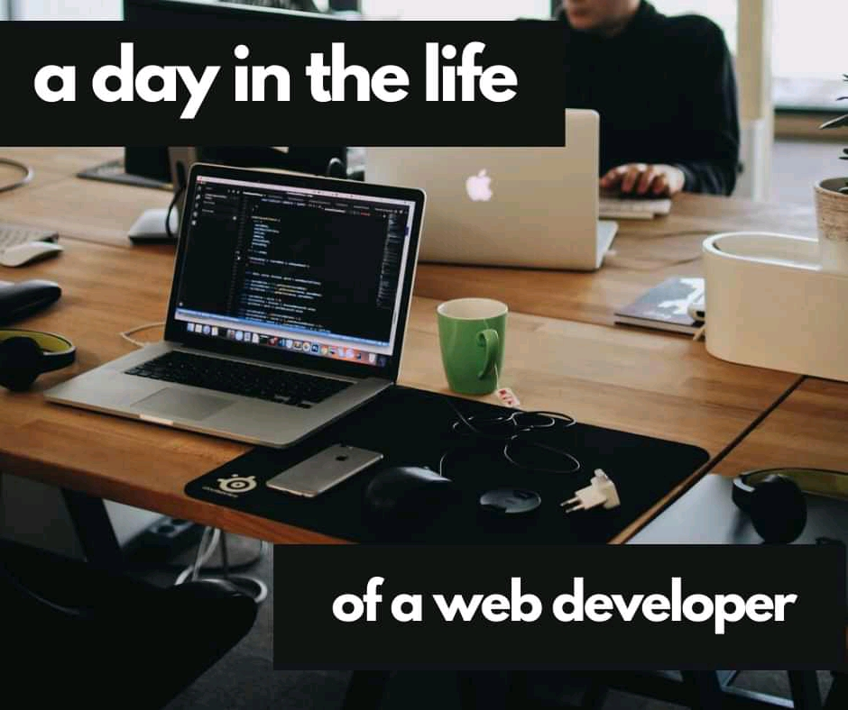

About me
Hey! My name is Ahmad, Am from Nigeria. Am presently studying Bsc. Biochemistry and I love coding. I would love to program a website for a big company someday. Web Programming has changed my world not just by Programming a website, learning web programming gives me problem solving skill. And am looking forward to improve my web Programming skills in the CS50 course.
Life of a Web Developer

üñ• A day in the life of a web developer
Every day is different in the world of web development. You face new challenges and obstacles every day which relate to different languages or aspects in web development. This keeps web development very fresh and fun, it's never the "same old boring" job like most other traditional job roles!
planning
Building user interface prototypes by sketching out these with pen and paper, or using wireframing tools like Balsamiq. This allows you to grasp what you need to build using code later on (as spoken about in the planning post).
programming
Writing code to build and develop websites or web pages using HTML, CSS, and JavaScript. Sometimes you'll use other languages or frameworks, particularly if you're a more experienced web developer, however as a beginner, you'll solely use HTML, CSS and JavaScript or Python.
cross-platform/device
As a web developer, even when you are a beginner, it's important to take into consideration, that there are multiple different screen sizes and devices. Wehn developing a website, especially incorporating in CSS, using Flexbox responsive CSS, we can make our websites perform across all types of screens and devices. PS: In my online course I'll be covering Flex and Flexbox CSS for developing responsive layouts in the bonus section!! ⚡️
updating current websites
As a web developer, you might need to fix some bugs in existing code on a web development project or make some improvements. This will require you to learn the current related codebase and become familiar with it in order to fix or enhance the code.
There are lots of other things a web developer does during the day however these are some of the main technical aspects of a web developers day. These are maybe some things you will be doing after you become a web developer! üî•